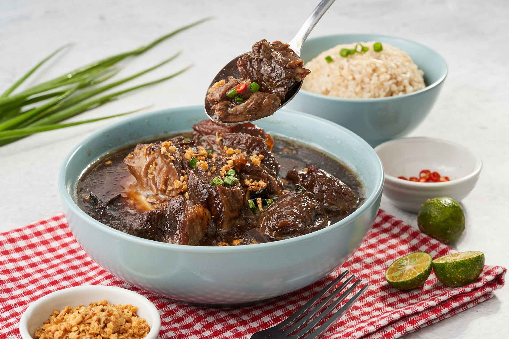

Beef Pares Lomi
Beef, 1 hour
Bryce Salvador
02-May-2022 10:00 P.M
Ingredients
- 2 1/2 lbs beef kalitiran
- 1 Knorr Beef Cube
- 1 lb. fresh miki noodles
- 5 cloves garlic chopped
- 1 onion chopped
- 1 1/2 teaspoons ginger chopped
- 2 tablespoons potato starch
- 3 tablespoons brown sugar
- 2 star anise
- 1 egg
- 3 tablespoons soy sauce
- 6 cups water
- 3 tablespoons cooking oil
Instructions
- Heat oil in a wok. Sauté garlic, onion, and ginger until the onion softens.
- Add beef. Sauté until the beef turns light brown.
- Pour the soy sauce and water. Cover and Let boil.
- Add star anise, sugar, and Knorr Beef Cube. Stir. Cover the wok and then adjust the heat to a low setting. Continue cooking until the beef tenderizes
- Remove and discard the star anise. Add the fresh noodles and then season with salt and ground black pepper. Cook for 3 minutes.
- Thicken the soup by adding a slurry. Do this by combining potato starch with 3 tablespoons of water. Pour it into the wok and add beaten egg. Stir. Cook until the soup thickens based on your desired consistency.
- Serve with soy dipping sauce and garlic fried rice, if preferred. Share and enjoy!
